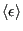
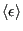

Next: Headers Up: Case Study 1: The Previous: Introduction
In this section, we will dissect piece-by-piece a small C program that implements an NVT Metropolis Monte Carlo simulation of a 2D Ising magnet.
If you have not already done so, clone the Abrams-Teaching/instructional-codes repository from Github.
This repository will be updated throughout the term with source code in the
originals
subdirectory. You should create a subdirectory called
my_work
inside this repository and do all editing, compiling, and running in there. This directory is specifically excluded from
git
revision control by its inclusion in the
.gitignore
file. This way, when I put new codes in the repository, you only have to
git pull
to download them.
cd cd cheT580 git clone git@github.com:Abrams-Teaching/instructional-codes.git cd instructional-codes mkdir my_work cd my_work cp ../originals/ising_mc.c . code .
From a terminal command-line inside VSCode, or outside, you can compile ising_mc.c via
gcc -O3 -o ising ising_mc.c -lm -lgsl
and you can then run it at the command line as ./ising. It has a lot of options for controlling the size of the magnet (the number of spins), the temperature, and other parameters, which I'll go over now.
ising_mc.c conducts a canoncial Metropolis Monte Carlo simulation of an Ising magnet of size at temperature  (both specified by the user at run time on the command line), and it computes both the average energy per spin
 and the average spin value,
(both specified by the user at run time on the command line), and it computes both the average energy per spin
 and the average spin value,
 .
.
Periodic boundaries are employed in calculating the nearest-neighbor interactions. Consider an magnet; each row  indexed from 0 to
indexed from 0 to  has
has  columns also indexed from 0 to
columns also indexed from 0 to  .
If the cell at (5,5) queries its neighbors, they are at (4,5), (6,5), (5,4), and (5,6). However, the cell at (0,5) would have a southern neighbor at (
.
If the cell at (5,5) queries its neighbors, they are at (4,5), (6,5), (5,4), and (5,6). However, the cell at (0,5) would have a southern neighbor at ( ,5) instead of (-1,5), since there is no row indexed -1! Fig. 3 demonstrates this.
,5) instead of (-1,5), since there is no row indexed -1! Fig. 3 demonstrates this.
|
|
An abbreviated listing of the code follows. Some comments in the full, downloadable code have been omitted for space, and I have instead explained each code fragment in accompanying text.
cfa22@drexel.edu